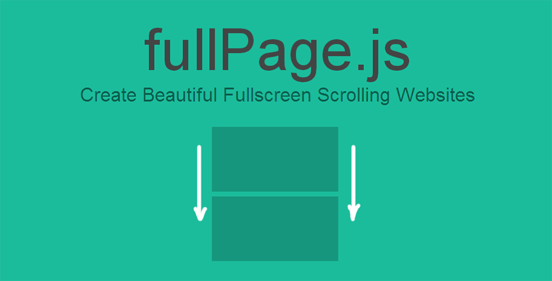
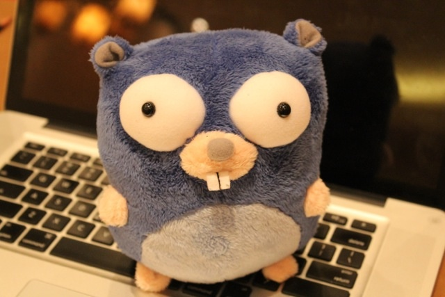

前端学习总结(07.01~07.21)
一直想学习大前端，最近在做公司官网，涉及到了一些切图，动画效果的任务，总结如下：
#先从Bootstrap开始
首先学习的时候有一点没有学习到，就是如何定制Bootstrap，使用
less或者sass重新编译Bootstrap以达到定制的效果
我使用的方法是在main.css文件中覆盖bootstrap.min.css文件里面的css学习到了一些之前没有注意到的，就是针对移动端的定制，hidden-xs 和 visible-xs， 团队成员一致同意，直接用bootstrap搭起来的pc网站在smartphone上面的导航和用户体验比较差，所以针对移动端的优化是必要的
- 针对移动端重新设计header，pc端的header在smartphone上面会被折叠，收拢在一个小的按钮里面，用户点击2级菜单需要点击屏幕三次，致命缺点
- 针对移动端重新设计footer，pc端的footer可能会过大，过长，不够精简，在移动端会占据一整个屏幕，抢占了用户关注的重心
- 移动端的文字不宜太长，大小16px较好
- 充分利用modal组件，可以在点击元素的时候触发modal,展示更多信息，比如联系方式，地址，邮箱等等，还有登录和注册的表单
学习的过程中，了解到了一个第三方库fullpage.js

Demo: Apple Demo
很好的第三方库，可以把屏幕分成一整屏，一整屏的。就像一张张PPT，很简单还有一个叫animate.css的第三方css动画库。简单易上手
关于photoshop导出图片的问题

- 如果需要透明图片，导出png格式的，Mac端可以选择Imageoption,进行图片压缩，相当优秀的一款批处理图片的软件
- 如果不需要透明的可以选择导出jpg格式的，降低图片的品质，可以将图片大小缩减的比较小，通常比同质量的png图片大小小
关于photoshop制作黑色蒙版效果
- 在原始图片上面新建一个图层
- 用油漆桶倒一层黑色的在上面，如果不够，继续倒
- 选择图层的情况下，按数字键可以调整图层透明度，然后调整到满意的地步，就可以导出图片了
使用CDN对图片自动进行优化，我在国外的CDN提供商处很少见到这类服务，倒是国内的两大新秀CDN七牛和又拍在这方面都做了大量工作。其工作方式为，向CDN请求图片的URL参数中包含了图片处理的参数（格式、宽高等），CDN服务器根据请求生成所需的图片，发送到用户浏览器。
七牛云存储的图片处理接口极其丰富，覆盖了图片的大部分基本操作，例如：- 图片裁剪，支持多种裁剪方式（如按长边、短边、填充、拉伸等）
- 图片格式转换，支持JPG, GIF, PNG, WebP等，支持不同的图片压缩率
图片处理，支持图片水印、高斯模糊、重心处理等
七牛云存储的图片处理接口使用并不复杂，例如下面这张原图：

我们通过如下URL请求，裁剪正中部分，等比缩小生成200x200缩略图：http://qiniuphotos.qiniudn.com/gogopher.jpg?imageView2/1/w/200/h/200
使用grunt/glup进行压缩， 可以参考grunt-image
以上就是这个月的前端学习总结
需要改进：
- css各种属性的进一步学习, opacity, animation等等
- 学习Bootstrap的定制，形成自己的css和html的snippet, 以后可以直接使用snippet搭建网站
- photoshop的进一步学习，可以脱离photoshop, 直接学习Sketch 3,专门为移动端设计的Mac软件